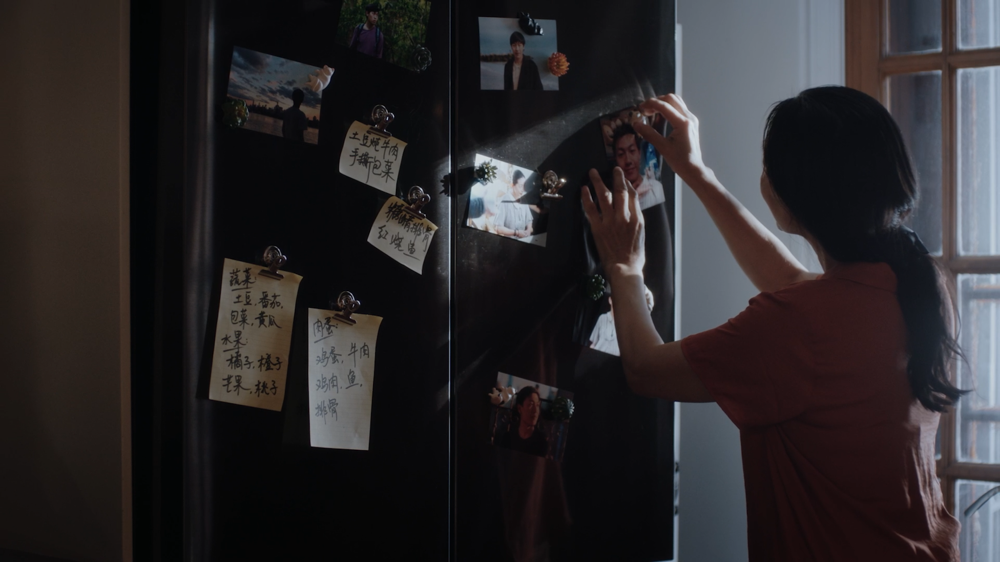

About / 关于我
Steven
Chen陈越
Generative artist.
Filmmaker.
I direct films and build cinematic worlds with AI. Based in Los Angeles, working across original stories, brand films and post-production.
以电影叙事为基础，探索影像的新可能。
Let’s work together
01 / Background
Cinema is my
starting point.
始于电影，延伸至新的影像语言。
My practice brings the discipline of filmmaking to generative image: a clear story, considered framing, and an edit that gives each shot its purpose.
I work across narrative shorts, documentary and commercial production. That experience connects my AI visual development with the practical work of directing, producing, editing, color and sound.
从《孤》的生活叙事，到《玄天诀》的仙侠世界，我关心人物、情绪与画面之间的关系。传统拍摄与 AI 创作在这里相互补充，让故事从前期开发延伸至最终的视听呈现。
- USC School of Cinematic Arts
- MFA ’26 南加州大学电影艺术学院
- School of Visual Arts, New York
- BFA, Film 纽约视觉艺术学院
02 / Practice
The work, in motion.
Real performances. Imagined worlds.
A shared attention to the frame.
Drag to compare · 左右拖动对比
Grand Theft Art
3D camera previs to AI-rendered image.
Drag the divider to explore both, in sync.


Ways to collaborate
A whole project,
or the part you need.
从整体创作到具体环节，
根据项目需要加入。
AI creative direction
Worldbuilding, character and scene development, previs and generative filmmaking, carried through to the edit.
AI VisualsFilm & commercial production
Directing and producing, with experience in narrative shorts, documentary and branded films.
Commercial workEditing, color & sound
On-set editorial, picture editing, color grading, location sound and audio post. Working with Premiere Pro and DaVinci Resolve.
Color grading reel
03 / Collaborations
Creative
connections.
Working with AI platforms, filmmakers and brands.
连接影像创作、技术探索与商业制作。
- Dreamina AI
- Creative Partner & Official Creator
- Shotlab 新片场
- Contracted Creator
- Moodio AI Agent
- AI Video Generation ConsultantCMU student-led team
- OpenCreator.io
- Official Creative Ambassador
Selected commercial credits
Production & post-production
- René Furterer
- GE HealthCare
- Feihe 飞鹤
- Jiudao 九道文化
04 / Selected recognition
On screen.
In conversation.
作品荣誉、行业分享与评审。
Future Reality AI Film Festival
Preliminary Jury Member
Festival announcement
SOHO International Film Festival × HXR · New York CityAI on the Lot
Invited Presenter · Grand Theft Art
View the presentation announcement
Campus Greenlight Student Pitch Contest · Culver CityGolden Sparrow Awards
Campus Elite Competition · Best Editing, Second Prize
Feel Every Stories2025 金雀奖 · 校园精英大赛
View the film project
创作人最佳剪辑 · 二等奖Alone / 孤
2023 · 53rd USA Film Festival
International Short Film Award Finalist · Screened2022 · New York International Film Awards™
Full recognition & film
Grand Jury Award · Screened
05 / Contact
Los Angeles / 洛杉矶What are we
making next?
For a film, campaign or creative partnership, tell me what you’re making, the scope and your timeline.欢迎聊聊你的项目。来信可以附上创作方向、所需环节与时间安排。
Elsewhere